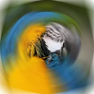

Lensvervaging

Een draaiende vervaging die een scherp gebied rond het midden laat en naar de randen toe sterker wordt. Vervaging Zoomen smeert in plaats daarvan vanuit het midden naar buiten, tot voorbij de randen van de laag.
Instellingen
| Instelling | Type | Bereik | Standaard |
|---|---|---|---|
| Midden | Punt (X, Y) | -1 tot 2 | 0.5, 0.5 |
| Hoek | Hoek | 0° tot 360° | 10° |
| Straal | Getal | 0 tot 2 | 0.25 |
| Zachte rand | Getal | 0 tot 2 | 0.25 |
| Vervaging | Keuze | Draaien, Zoomen | Draaien |